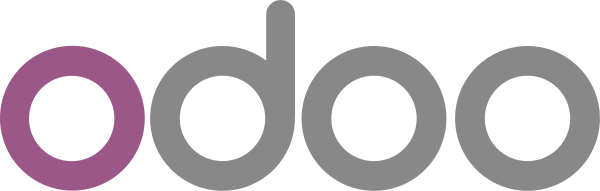

KJA Muhammad Irfan adalah kantor penyedia jasa akuntansi yang didirikan dengan kepercayaan bahwa semua jenis bisnis dalam skala apapun berhak memiliki fondasi keuangan yang kuat. Kami memberikan jasa akuntansi dan keuangan yang fleksibel mengikuti kebutuhan bisnis anda.
Yang penting masalah anda beres.
Rekan Pendiri

Temukan teknologi yang sesuai dengan kebutuhan bisnis anda
Pembukuan yang benar adalah dasar dari segala dasar kompetensi keuangan. Jika bisnis anda hanya mengumpulkan catatan dan dokumen, kami siap membantu membukukan dokumen tersebut menjadi catatan keuangan yang komprehensif dan bisa digunakan untuk pengambilan Keputusan atau pemenuhan data ke pihak eksternal.
Sebagai partner teknologi, kami adalah agen resmi Accurate Online dan Odoo. Kami siap membantu set-up database, dokumentasi proses bisnis, hingga training karyawan. Kami bantu bisnis anda memiliki ERP yang mampu menjawab kebutuhan bisnis.
Untuk bisnis yang sedang membutuhkan tambahan dana, team kami siap membantu anda menyiapkan data keuangan, forecast, dan membantu komunikasi dengan calon investor.
Kami bantu bisnis anda mendapatkan pendanaan yang tepat di waktu yang tepat.
Jika bisnis anda berkeinginan untuk memiliki team yang dedicated untuk mengolah, menganalisa, dan menyajikan data keuangan atau lebih sering disebut sebagai team Financial Planning & Analysis (FP&A) namun belum berpengalaman menjalankan FP&A.
Team kami siap menjalankan fungsi FP&A di bisnis anda dengan sistem kontrak di awal fase pendirian team FP&A. Hingga kemudian lanjut rekruitmen, onboarding, dan training karyawan FP&A yang akan full-time di bisnis anda.
Kami bantu bisnis anda memiliki team FP&A yang handal.